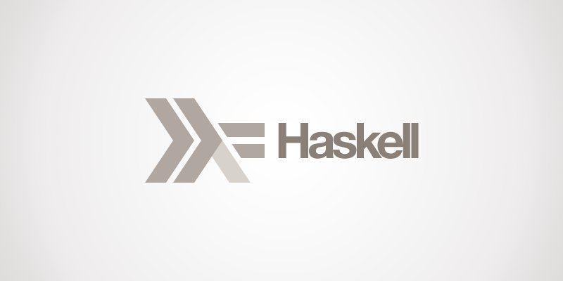

I you are one of who have been following our post series about template metaprogramming with modern C++, at this time you should have become a C++ template Guru. At least thats what I expect ;).
You know about class templates, function templates, value parameters, type parameters, variadic templates… Your template metaprogramming toolbox is full of great things to play with. Thats good, but you want to start playing with your compiler, writting some cool metaprograms.
Lets start the game!
“Good” old template metaprogramming
In the old days of C++98/03 there were no variadic templates, no template aliases, no std::enable_if. Metaprogramming with C++ was a hard and ugly task.
But it was a neccesary task. Most of the time library implementers used template metaprogramming to parametrize and automatize code generation for the library, instead of writting multiple duplicates or derivatives of the same code just to cover all the cases. This was, and it is, a common practice even for Standard Library vendors.
Template metaprogramming was used to improve perfomance on high-computing libraries too, with some clever code transformations done thanks to tmp. The best example of this is the blitz++ library, one of the first examples of a real use case of template metaprogramming.
But such codebases where hard to read and maintain, so for most common C++ programmers tmp was just “crazy stuff for nerds”.
Since C++11 the language has evolved to support some ways of metaprogramming as a common and useful thing. Metaprogramming became a first class citizen in C++, instead of the obscure, magical, and freaking way to abuse the compiler it was at the beginning.
Look at the <type_traits> header. It provides the so called type traits, class templates designed to provide some useful information about a given type.
1 2 3 | #include <type_traits> constexpr bool is_ptr = std::is_pointer<int*>::value; |
Language features like static_cast and variadic templates help a lot too when doing tmp.
But the syntax is still too ugly. Consider the implementation of std::decay:
1 2 3 4 5 6 7 8 9 10 11 12 13 | template< class T > struct decay { typedef typename std::remove_reference<T>::type U; typedef typename std::conditional< std::is_array<U>::value, typename std::remove_extent<U>::type*, typename std::conditional< std::is_function<U>::value, typename std::add_pointer<U>::type, typename std::remove_cv<U>::type >::type >::type type; }; |
Too many nested typenames, its hard to follow and undertand the code.
Could that syntax be improved? I think that’s possible, and that’s exactly what we will learn today.
Let’s get simpler
As we seen in our introduction to tmp, the C++ template system can be seen as a pure functional language. In that way, suppose that you are working with a weird version of Haskell.
There are no templates, there are no types. You have expressions and values. Expressions and values that you can evaluate, manipulate, etc. Call this abstraction “The Haskell Metaphor”.

In our functional language, a C++ type is really a value we work with. And templates are expressions that take values (C++ types) as parameters:
1 2 3 4 | template<typename T> using identity = T; using i = identity<int>; |
In the example above, the identity alias is a metafunction in our Haskell Metaphor: Takes a value and returns it. The alias i is only a value with a name, consider it a (meta)variable.
To get this metaphor simpler, our metafunctions will get C++ type parameters only. If you need to pass a C++ value, use boxing though std::integral_constant:
1 | using one = identity<std::integral_constant<int,1>>; |
Play with simple expressions
Here is an example of our Haskell Metaphor, using my Turbo metaprogramming library for C++11. Turbo is designed to be used with biicode, which makes Turbo completely platform independent and easy to use. For most of the cases, just include <manu343726/turbo_core/turbo_core.hpp> and you are ready:
1 2 3 4 5 6 7 8 9 10 11 12 | #include <manu343726/turbo_core/turbo_core.hpp> using one = tml::Int<1>; using two = tml::Int<2>; using three = tml::eval<tml::add<one,two>>; int main() { std::cout << tml::to_runtime<three>() << std::endl; } |
Let’s examine the example step by step:
tml::Intdeclares an integer value. Is just and alias tostd::integral_constant<int>.tml::addis a metafunction to perform addition.tml::evalis the magic wand of Turbo. It takes any expression and evaluates it. The addition expression in this case.tml::to_runtimeis the bridge between the compile-time and the runtime world. This function templates takes a type (A value in the Haskell metaphor) and returns the C++ equivalent value. This work is done completely at compile time and has zero runtime overhead.
After compiling (Running the metaprogram), you can run the resulting C++ program:
1 2 3 | $ bii cpp:build $ ./bin/example 3 |
Thats all! Simple, isn’t it? Here’s std::decay in the Turbo way:
1 2 3 4 5 6 7 8 9 10 11 12 13 14 15 16 | template< class T > struct decay { using U = tml::eval<std::remove_reference<T>>; using type = tml::eval< tml::conditional< std::is_array<U>, tml::eval<std::remove_extent<U>>*, tml::conditional< std::is_function<U>, std::add_pointer<U>, std::remove_cv<U> > > >; }; |
I found it much more readable. What do you think?
Summary
Today we have seen that treating tmp as a functional language is a simpler way to do metaprogramming. We introduced what we call The Haskell Metaphor as a way to see and work with metaprograms: Look at that code as Haskell, instead of the C++ type system.
In the next posts we will see more complex examples of this metaphor, with high level metaprogramming constructions such as high-order metafunctions, lambda expressions, etc. Stay tuned!
If you liked this post please comment below. If you want to try biicode just click on the sidebar button and if you have any doubts check our docs and forum.
Related Posts
Pingback: Непросмотренные ссылки – 4 | Откомпилируй Это()
Pingback: A Tiny Metaprogramming Library: Metafunctions - biicode Blog()